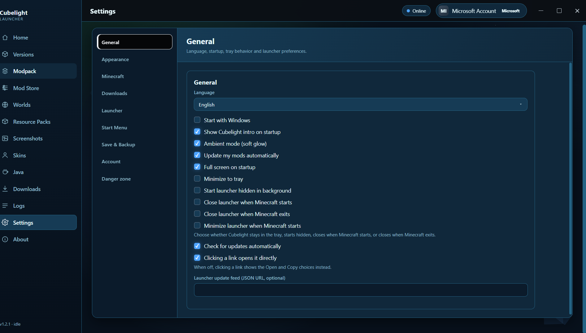

Releases / v1.2.1 · Latest
Cubelight Launcher v1.2.1
v1.2.1
Asset
CubelightSetup-1.2.1.exe
Size
≈ 75 MB
Installer
NSIS · per-user
Platform
Windows 10/11
What's new
- In-app updates — Settings → About → Updates. A newer release is downloaded and installed silently, no more manual downloads.
- NSIS setup restored — wizard-based installer, installs per-user (no admin rights), creates Start Menu + Desktop shortcuts, shows up in Apps & Features for easy removal.
- Animated banner scenes — the home banner now lives: blocky parallax pines under dawn / noon / sunset / night / storm / snow, ~44s cycle.
- Tray notification instead of silent hide — pressing Alt+F4 no longer makes the launcher vanish; you get told it is still running and where to find it.
- Honest online-play feedback — accounts without a Java Edition profile see a clear error instead of a silent offline fallback, and get a badge in Settings.
- Installer reliability — ffmpeg.dll kept; the icon-cache repair batch file was removed from the package.
Upgrading from v1.0.2 / v1.1.0
Option A (recommended): run this setup directly — it replaces the old install cleanly, your settings, accounts and modpacks carry over.
Option B: inside the launcher, Settings → About → Updates → Check for updates → Update now. (v1.0.2 and v1.1.0 need one extra line in the update feed config — see the release notes or the project README.)
Screenshots

